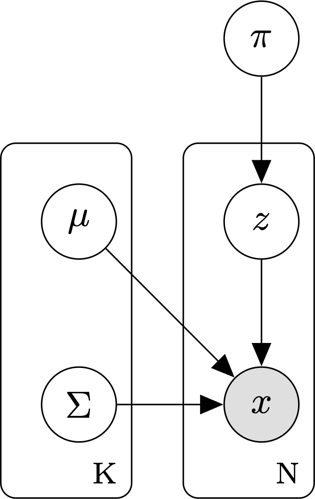

Gaussian mixture models¶
A Gaussian mixture model (GMM) is a latent variable model commonly used for unsupervised clustering.

{kind=link}
Graphical model for a GMM with K mixture components and N data points.
A GMM assumes that:
- The observed data are generated from a mixture distribution, P, made up of K mixture components.
- Each mixture component is a multivariate Gaussian with its own mean \(\mu\), covariance matrix, \(\Sigma\), and mixture weight, \(\pi\).
The parameters of a GMM model are:
- \(\theta\), the set of parameters for each of the K mixture components. \(\theta = \{ \mu_1, \Sigma_1, \pi_i, \ldots, \mu_k, \Sigma_k, \pi_k \}\).
Under a GMM, the joint probability of a sequence of cluster assignments Z and an observed dataset \(X = \{x_1, \ldots, x_N \}\), is:
\[p(Z, X \mid \theta) =
\prod_{i=1}^N p(z_i, x_i \mid \theta) =
\prod_{i=1}^N \prod_{k=1}^K
[\mathcal{N}(x_i \mid \mu_k, \Sigma_k) \pi_k ]^{\mathbb{1}_{[z_{i} = k]}}\]
where
- \(\theta\) is the set of GMM parameters: \(\theta = \{ \mu_1, \Sigma_1, \pi_i, \ldots, \mu_k, \Sigma_k, \pi_k \}\).
- \(Z_i \in \{ 1, \ldots, k \}\) is a latent variable reflecting the ID of the mixture component that generated data point i.
- \(\mathbb{1}_{[z_i = k]}\) is a binary indicator function returning 1 if data point \(x_i\) was sampled from mixture component \(k\) and 0 otherwise.
As with other latent-variable models, we use the expectation-maximization (EM) algorithm to learn the GMM parameters.
Models
References
| [1] | Bilmes, J. A. (1998). “A gentle tutorial of the EM algorithm and its application to parameter estimation for Gaussian mixture and hidden Markov models” International Computer Science Institute, 4(510) https://www.inf.ed.ac.uk/teaching/courses/pmr/docs/EM.pdf |